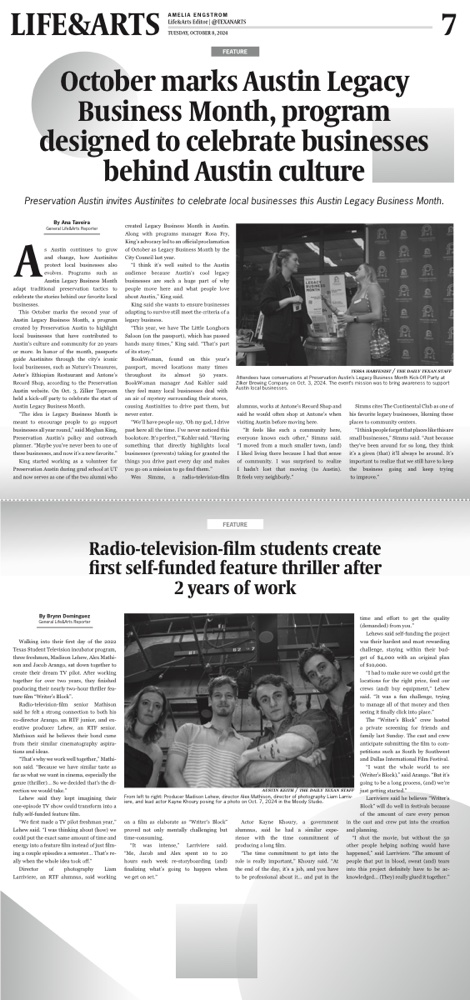
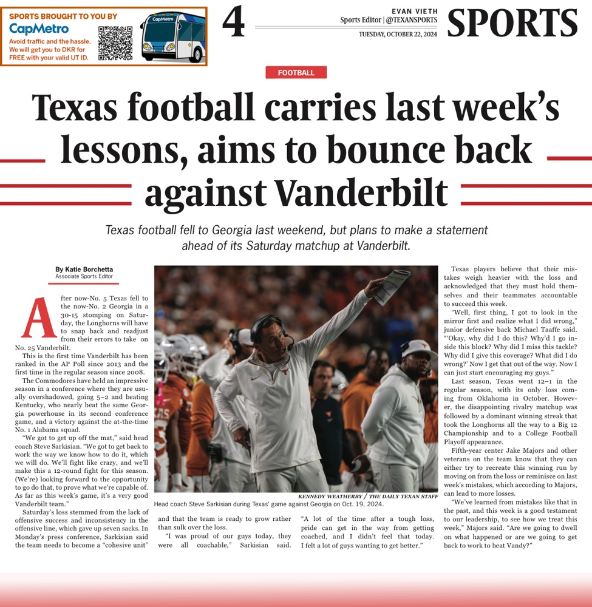
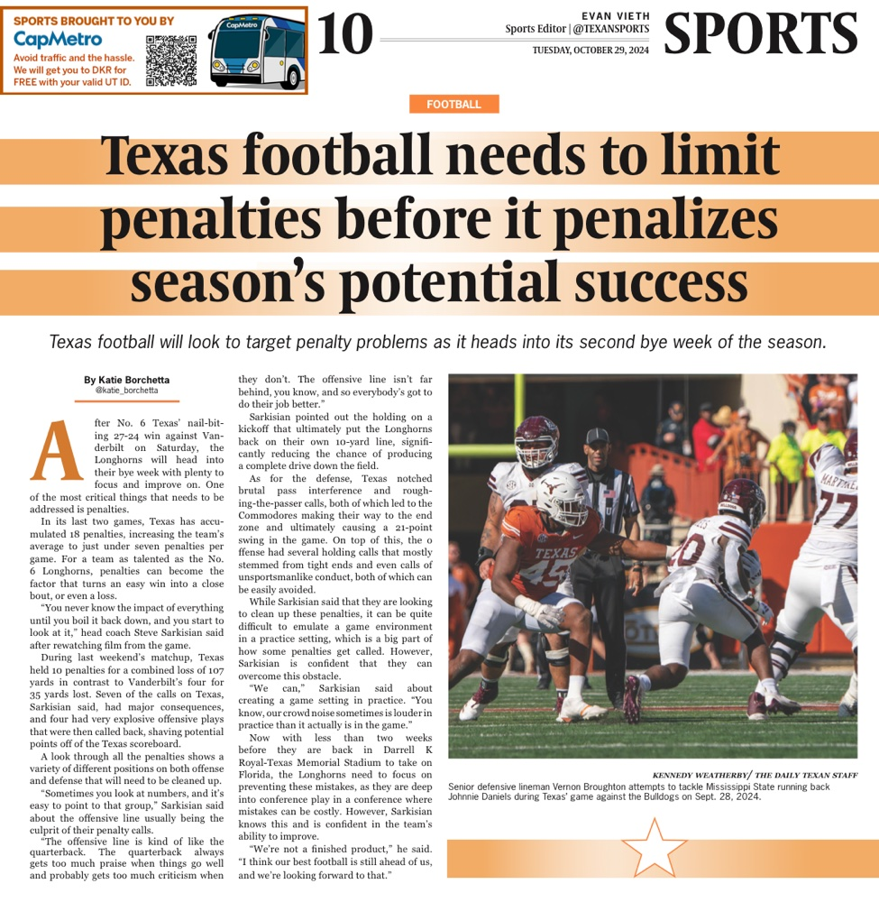

About
Journalism student growing in the field of civics, public service, and strategic planning. Here is a glimpse of my work in marketing, communications and videography.
Social Media
Published Posts
Marketing design for social media.
Video & Reporting
Video Reporting
Video and written reporting work.
Design Work
Print & Video Design
Page layout for The Daily Texan, and video design work.


